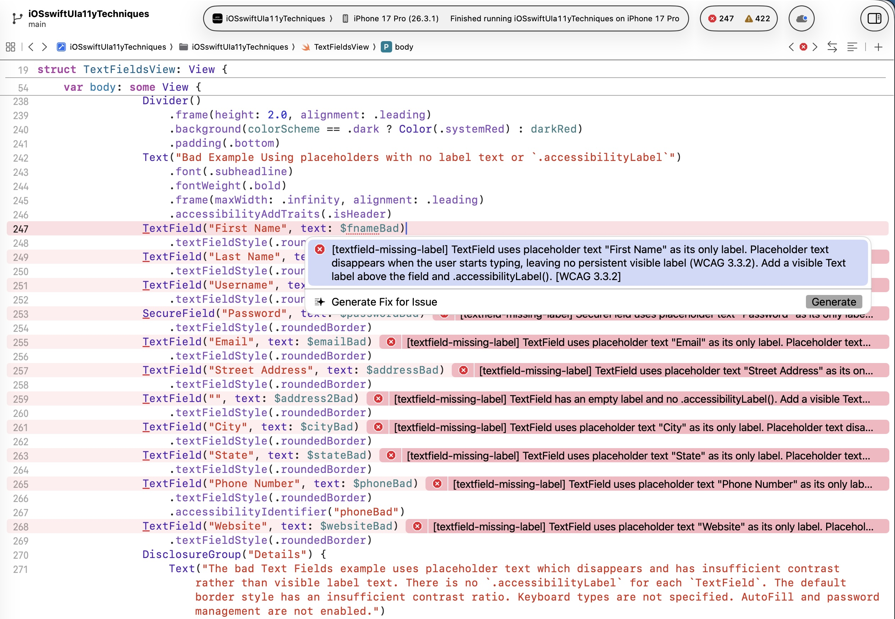

Finding and fixing accessibility defects before testers do
.accessibilityLabel takes 30 seconds to fix while coding…Goal: give developers the same accessibility checks while they code
--fix)a11y-check catches defects at every stage, earliest to latest:
| Stage | Integration | When it runs |
|---|---|---|
| Code | CLI directly (+ watch mode) | On demand / every file save |
| Code | AI + MCP server | Real-time in editor |
| Build | Xcode Run Script / SPM Plugin | Every Cmd+B |
| PR | GitHub Actions | Every pull request |
| PR | SARIF + Code Scanning | Inline on PR diffs |
# Install
brew install a11y-check
# Scan all Swift files
a11y-check .
# Show only errors
a11y-check . --only error
# Scan a single file
a11y-check MyView.swift
# Auto-fix issues
a11y-check . --fix
# Preview fixes before applying
a11y-check . --fix --dry-run
# Generate HTML report
a11y-check . --format html > report.html
# Watch mode — re-runs on every file save
a11y-check . --watch
# See all 31 rules
a11y-check --list-rulesAll features — scanning, auto-fix, scoring, HTML reports, Xcode & CI integration — work without AI
The AI integrations are optional enhancements
MCP server connects a11y-check to Cursor, Windsurf, VS Code/Copilot, Claude Desktop
You: Check TextFieldsView.swift for accessibility issues
AI: Score: 25/100 (F) — 9 passed, 2 failed
Failed WCAG criteria:
✗ 3.3.2 Labels or Instructions (11 errors)
✗ 4.1.2 Name, Role, Value (1 error)
You: Fix them
AI: [Adds Text labels and .accessibilityLabel() modifiers]
Fixed 11 issues.
You: Run the check again
AI: Score: 100/100 (A) — 11 passed, 0 failed
Trend: +75.0 from last runFull loop: detect → score → understand → fix → re-score

# Only flag NEW issues, not legacy debt
a11y-check Sources/ --diff --diff-base main --only error
# Save baseline, only fail on regressions
a11y-check Sources/ --baselineHTML report uploaded as artifact for compliance review
WCAG Score: 81.0 / 100 (B-)
[████████████████░░░░] 81.0%
Score Trend:
Change from last run: +4.2
History: ▃▄▅▅▆▇--per-view): score each SwiftUI View individually--badge) · CI quality gate (--min-score 80)a11y-check . → see score (F)a11y-check . --fix → auto-fix issuesa11y-check . again → score jumps to AEvery developer touchpoint — editor, build, PR — has accessibility checking built in.
The same 31 rules run at every stage.
Defects are found and fixed minutes after they're written,
not weeks later by a tester.
AI is optional — the core tool works without tokens or API costs.
brew install a11y-check
cd /path/to/YourApp
a11y-check .
GitHub Repo ·
Sample HTML Report ·
a11y-check Docs ·
MCP Server Setup
iOS App Store